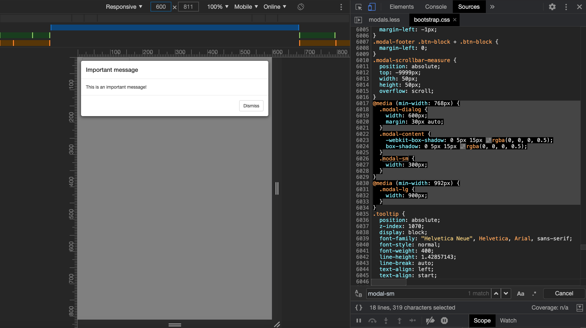
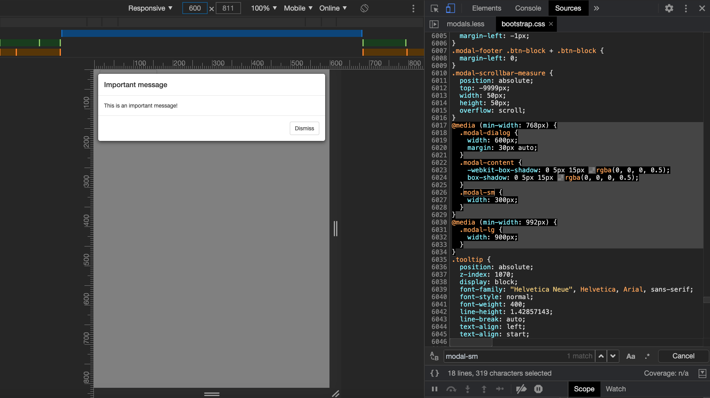

6 CSS for Shiny
In the previous part, we saw how to create, manipulate HTML tags with shiny and htmltools, as well as importing external web dependencies, especially CSS files. This is however far from being enough to develop apps that stand out from the pack. As introduced in 1.3.5.1, CSS is a web language allowing a deep customization of the appearance. This part aims at providing an acceptable overview of CSS capabilities in the shiny context, so that you may start to seamlessly customize your apps in few times.
6.1 How to include CSS?
There are three ways to include CSS in a web page:
- Point to an external file
<link rel="stylesheet" href="style.css"/>. - Insert the style in the
head. Not recommended for complex projects since hard to maintain. - Insert the style at the tag level, through the
styleattribute, also known as inline CSS, and not recommended since hard to maintain.
<!DOCTYPE html>
<html lang="en">
<head>
<meta charset="utf-8" />
<link rel="stylesheet" href="style.css" />
<title>CSS</title>
<style type="text/css">
p {
color: red;
}
</style>
</head>
<body>
<p style="color: red">Hello World</p>
<p>Some text</p>
<div>Plop</div>
</body>
</html>We advise to follow the first method as much as you can so that you modify the CSS in only one place! At the end of the day, your CSS script will look like the below example:
All of the above methods apply to shiny:
-
External CSS file
tags$link(rel = "stylesheet", type="text/css", href="www/style.css"). -
Internal CSS
tags$head(tags$style("p {color: red;}")). -
Inline CSS
p(style = "color:red;", "Red text").
However, if you correctly followed the previous part about HTML dependencies, the best way in Shiny is to create a dependency, and attach it to a tag:
css_dep <- function() {
htmlDependency(
name = "css dep",
version = "1.0",
src = path_to_css,
stylesheet = filename
)
}
tagList(tag, css_dep)Following this method, you make the file accessible on the server, thereby easing the debugging process. When should we apply the above method? Well, it does not make a lot of sense for tiny CSS modifications, where you could use one of the three other methods listed above. Moreover, it is also fine for an external dependency for which you don’t need to debug or modify the code.
6.2 CSS selectors
CSS selectors define on which elements to apply CSS rules. Below, we review the most common patterns.
6.2.1 Basics
To apply CSS, we select a tag, choose the property we want to change and give it a value:
For instance, to set the color blue to the p tag, we would do:
Now, how would we apply the same property to multiple tags? We separate tags by a comma, also called grouping selector:
See below an example with a Shiny app:
6.2.2 Select by class, id
The method shown above applies to all selected tags. This is not necessarily what we want as we probably would like to filter. We first add a class to the first p tag. Best practice is to give it a meaningful name:
On the CSS side, we prefix the class by a .:
To style unique elements, we may use id:
As another example, the result is shown in Figure 6.1:
### RUN ###
# OSUICode::run_example(
# "css/selector-class-id"
# "package = "OSUICode"
# )
### APP CODE ###
library(shiny)
ui <- fluidPage(
tags$style(
".first-p {
color: red;
}
#element {
color: red;
}
"
),
p(class = "first-p", "Hello World"),
p("Another text"),
div(id = "element", "A block")
)
server <- function(input, output) {}
shinyApp(ui, server)The second p tag is not selected.

FIGURE 6.1: Select by class and id
6.2.3 Apply CSS to single elements
Let’s consider the following example:
How would you change the color of the World word? We could not select the whole p element, as it would apply to the
whole tag. There exists specific tags like div and span which you can apply. As stated in chapter 1.3, span may be used inside containers to surround words:
<p>Hello <span class="custom">World</span>! What's up?</p>6.2.4 Advanced selectors
Until now, we’ve seen how to select an element by the tag name, a class and an id. Yet, this is not enough. How would you select the below tag?
6.2.4.1 Select nested tags
We consider two HTML tags. We only want the first a element to have a red text.
We can’t select by class .nav-link as it would also style the second element!
<li class="nav-item">
<a class="nav-link" href="#">Link</a>
</li>
<a class="nav-link" href="#">Link</a>The idea is to select the first tag, that is li, then select it’s child a:
The Shiny navbarPage template is composed of navigation items li and a, which we may easily modify:
### RUN ###
# OSUICode::run_example(
# "css/selector-nested/ex1"
# "package = "OSUICode"
# )
### APP CODE ###
library(shiny)
ui <- navbarPage(
"App Title",
tabPanel(
"Plot",
tags$style(
"li a {
font-size: 20px;
font-weight: bold;
}
"
),
tabsetPanel(
tabPanel("Plot"),
tabPanel("Summary"),
tabPanel("Table")
)
),
tabPanel("Summary"),
tabPanel("Table")
)
server <- function(input, output) {}
shinyApp(ui, server)
FIGURE 6.2: Style all nav link elements
You’ll notice that tabsetPanel() tabs are also modified, which is not exactly what we wanted, as shown in Figure 6.2. The main difference between navbarPage() and tabsetPanel() is the class held by the the menu wrapper ul:
navbarPage(tabPanel("test"))#> <nav class="navbar navbar-default navbar-static-top" role="navigation">
#> <div class="container-fluid">
#> <div class="navbar-header">
#> <span class="navbar-brand">
#> <div class="tab-pane" title="test" data-value="test"></div>
#> </span>
#> </div>
#> <ul class="nav navbar-nav" data-tabsetid="3866"></ul>
#> </div>
#> </nav>
#> <div class="container-fluid">
#> <div class="tab-content" data-tabsetid="3866"></div>
#> </div>
tabsetPanel(tabPanel("test"))#> <div class="tabbable">
#> <ul class="nav nav-tabs" data-tabsetid="8874">
#> <li class="nav-item">
#> <a href="#" data-toggle="tab" data-value="test" class="nav-link active" data-target="#tab-8874-1">test</a>
#> </li>
#> </ul>
#> <div class="tab-content" data-tabsetid="8874">
#> <div class="tab-pane active" data-value="test" id="tab-8874-1"></div>
#> </div>
#> </div>which is nav navbar-nav for navbarPage and nav nav-tabs for tabsetPanel().
To isolate navbarPage() tabs, we have to improve our previous selector:
Doing so, we’ll only look at the link elements inside the container having the navbar-nav class.
### RUN ###
# OSUICode::run_example(
# "css/selector-nested/ex2"
# "package = "OSUICode"
# )
### APP CODE ###
library(shiny)
ui <- navbarPage(
"App Title",
tabPanel(
"Plot",
tags$style(
".navbar-nav li a {
font-size: 20px;
font-weight: bold;
}
"
),
tabsetPanel(
tabPanel("Plot"),
tabPanel("Summary"),
tabPanel("Table")
)
),
tabPanel("Summary"),
tabPanel("Table")
)
server <- function(input, output) {}
shinyApp(ui, server)The final result is depicted in Figure 6.3.

FIGURE 6.3: Style specific navbar nav link elements
6.2.4.2 Select by attributes
To select by attribute, we use tag[attribute]
<a data-toggle="dropdown">Tag</a>
<a data-toggle="my dropdown">Tag</a>
<a data-toggle="whatever">Tag</a>The below CSS code selects all a tags having a data-toggle attribute:
while the following code, will only select the first a tag:
The reason is that we exactly match the dropdown value!
We could be less specific:
* checks whether the word dropdown is there but not the position. You may use ^ and $ like you do with regular expressions to check if the value starts or ends by the specified word, respectively.
6.2.4.4 Direct descendants
Let’s consider a navbarPage() with nested navigation. This is accomplished with the navbarMenu() function:
navbarPage(
"App Title",
tabPanel("Plot"),
navbarMenu(
"More",
tabPanel("Summary"),
"----",
"Section header",
tabPanel("Table")
)
)The resulting HTML code is as follow:
<ul class="nav navbar-nav" data-tabsetid="5879">
<li class="active">
<a href="#tab-5879-1" data-toggle="tab" data-value="Plot">
Plot
</a>
</li>
<li class="dropdown">
<a href="#" class="dropdown-toggle" data-toggle="dropdown"
data-value="More">
More
<b class="caret"></b>
</a>
<ul class="dropdown-menu" data-tabsetid="7141">
<li>
<a href="#tab-7141-1" data-toggle="tab"
data-value="Summary">Summary</a>
</li>
<li class="divider"></li>
<li class="dropdown-header">Section header</li>
<li>
<a href="#tab-7141-4" data-toggle="tab"
data-value="Table">Table</a>
</li>
</ul>
</li>
</ul>There are two ul menus with multiple li and a inside. Applying our previous CSS selector as depicted in Figure 6.4 selects all links.

FIGURE 6.4: Style all navbar nav link elements
What if we only want to select the direct a children of the outer menu, meaning we exclude the inner menu links? Using the child combinator >, we can select direct children and not all descendant that could contain grand-children.
Result is displayed in Figure 6.5:
### RUN ###
# OSUICode::run_example(
# "css/selector-descendant"
# "package = "OSUICode"
# )
### APP CODE ###
library(shiny)
ui <- navbarPage(
"App Title",
tabPanel(
"Plot",
tags$style(
HTML(
".navbar-nav > li > a {
font-size: 20px;
font-weight: bold;
}
"
)
)
),
navbarMenu(
"More",
tabPanel("Summary"),
"----",
"Section header",
tabPanel("Table")
)
)
server <- function(input, output) {}
shinyApp(ui, server)
FIGURE 6.5: Style only direct children navbar nav link elements
Well, what if we want to be even more specific and get only the very first nav link element? We have to introduce pseudo classes.
6.2.4.4.1 Pseudo-classes
A pseudo class starts with the : symbol. For instance, a:active styles active links and button:disabled applies for disabled buttons.
There exists many pseudo class types, particularly the structural ones. Those are useful to select specific children like element:first-child. Going back to the navbarPage() example, we could refine our CSS selector adding :first-child to the li element as we want to only select the first item:
As expected, only the first link is styled, as demonstrated in Figure 6.6.
### RUN ###
# OSUICode::run_example(
# "css/selector-pseudoclass"
# "package = "OSUICode"
# )
### APP CODE ###
library(shiny)
ui <- navbarPage(
"App Title",
tabPanel(
"Plot",
tags$style(
HTML(
".navbar-nav > li:first-child > a {
font-size: 20px;
font-weight: bold;
}
"
)
)
),
navbarMenu(
"More",
tabPanel("Summary"),
"----",
"Section header",
tabPanel("Table")
)
)
server <- function(input, output) {}
shinyApp(ui, server)
FIGURE 6.6: Style only the first navbar nav link element
6.2.4.4.2 Pseudo-elements
Pseudo elements are preceded by ::. The most famous ones are ::before and ::after, that respectively apply before and after the selected element.
For instance .navbar-nav > li:first-child > a::before will insert an element before the very first navbar link.
### RUN ###
# OSUICode::run_example(
# "css/selector-pseudoelement"
# "package = "OSUICode"
# )
### APP CODE ###
library(shiny)
ui <- navbarPage(
"App Title",
tabPanel(
"Plot",
tags$style(
HTML(
".navbar-nav > li:first-child > a {
font-size: 20px;
font-weight: bold;
}
.navbar-nav > li:first-child > a::before {
content: '✌️'
}
"
)
)
),
navbarMenu(
"More",
tabPanel("Summary"),
"----",
"Section header",
tabPanel("Table")
)
)
server <- function(input, output) {}
shinyApp(ui, server)As an exercise, you may change a::before to a::after and notice how the emoji behave in the above example.

FIGURE 6.7: Add before pseudo-element
6.3 Best practices
6.3.1 DRY principle
DRY stands for “Don’t repeat yourself”. This methodology not only applies to structural languages like R and JavaScript but also to declarative languages like CSS. Below is an example of badly managed CSS code. Both .class-1 and .class-2 have the same color and border radius. Only the padding and font size change. This type of code does not follow the DRY rule and increases the risk of having contradictory CSS properties.
.class-1{
color: #33BEFF;
padding: 10px 16px;
font-size: 12px;
border-radius: 3px;
}
.class-2{
color: #33BEFF;
padding: 5px 10px;
font-size: 12px;
border-radius: 3px;
}We could gather all common properties in one generic class:
.generic {
color: #33BEFF;
border-radius: 3px;
}
.specific-1 {
padding: 10px 16px;
font-size: 18px;
}
.specific2 {
padding: 5px 10px;
font-size: 12px;
}On the HTML side, we add classes from the most generic to the most specific like:
As an even more concrete example, take a look at the bulma button:
Notice how easy it is to predict the style of the button. It will be large and take the maximum width. It is for sure more meaningful than seeing a .class1!
6.3.2 Selector specificity
What happens in case multiple different selectors target the same element? Which style is really applied? Consider the following example:
with the following CSS rules:
Can you guess what would be the element text color? Well, this is not obvious. You must understand that web browsers apply rules to select the more specific rules:
- Inline style is the most specific. This is style directly attached to the HTML tag.
-
idapplies to unique objects. -
class,pseudoclasses, attributes. - elements and pseudo-elements.
Going back to our previous example, the most specific selector is #element, therefore the text color will be red. What happens in case of equality? The last written selector is applied:
Only the second selector is applied to the tag. To apply class1, you must move it after the class2 style definition.
Best practice is to keep the lowest specificity as possible, thereby making .class the first choice.
6.3.3 Block element modified (BEM)
The BEM methodology will help you to write meaningful CSS, easier to manage.
A block is a standalone entity having a self explanatory name like header, checkbox. An elements is part of the block but not standalone like menu items.
A modifier indicates a specific state of an element, for instance if a button is disabled, active, … The general scheme is defined below:
Following this methodology guaranties to have documented and meaningful classes.
6.4 Modify CSS with the HTML inspector
6.4.1 Add inline properties
- Run the following app:
ui <- fluidPage(
tags$style("p { color: red;}"),
p("Hello World")
)
server <- function(input, output, session) {}
shinyApp(ui, server)Right click the
pelement and open the inspector. In theStylestab, notice theelement.stylesection. This is to define inline new CSS rules for the selected item.Let’s add 2 rules by clicking inside the
element.stylecontainer:
-
border-style: dashed. Indicates we want a box with dashed border -
border-color: .... To set a border color
After typing enter, the inline CSS is automatically added in the tag element.
You probably noticed the auto suggestion feature while typing a property, as shown in Figure 6.8, being particularly handy when learning CSS.
FIGURE 6.8: Edit CSS with Chrome DevTools
6.4.2 View local changes
Whenever playing around with a web page style or a shiny app, it may be good to have an overview of all changes when you are satisfied about the new design.
- Run the previous shiny app example and open the inspector
- In the Styles tab, add some new CSS properties to the first p element set of rules
- Once done press enter and click on the file name located at the top-right corner of the property box
- This opens the Sources tab. In the left sidebar, right click on the file name (index) and select
Local Modifications - This opens a
Gitlike diff panel calledChangeswhere you can review any change and see the previous values. If you refresh the page, you will loose every local change, unless the persistent authoring feature is active.

FIGURE 6.9: Review all CSS changes
To get a deeper understanding of the different CSS options please refer to the Google documentation.
6.5 CSS in action
We review the most commonly used CSS properties such as text styling, shadows, color and background color, …
6.5.1 Text Styling
6.5.1.1 Fonts
Fonts control the text appearance and may be changed as below:
In practice, we enter multiple font values, in case the end user does not have the same
font. The last values are composed of generic polices like serif and monospace.
For instance, Bootstrap 3 utilizes the default sans-serif police. A neat tool to inspect the current text fonts is the HTML inspector CSS Overview tab, as shown Figure 6.10.
FIGURE 6.10: Overview of font properties
Custom fonts may be downloaded with @font-face but there are few prerequisites to make them render properly:
- The file format must be correctly handled by the end user web browsers. There are currently
.ttf(work on almost all web browser),.woff(work on almost all web browser),.svg(iPhone and iPad),.eot(IE only) and.otf(don’t work on IE). - Those files have to be downloaded which may take time.
- Most fonts are not open source.
Importantly, the font files must be accessible to the CSS file where they are called from. As another example, the below code means that the fonts folder is located one level above the CSS file:
@font-face {
font-family: 'Framework7 Icons';
font-style: normal;
font-weight: 400;
src: url("../fonts/Framework7Icons-Regular.eot");
src: url("../fonts/Framework7Icons-Regular.woff2") format("woff2"),
url("../fonts/Framework7Icons-Regular.woff") format("woff"),
url("../fonts/Framework7Icons-Regular.ttf") format("truetype");
}Chapters 9 and 8 exposes convenient methods to seamlessly handle Shiny app’s font.
6.5.1.2 Size
To change the text size, we use the font-size property. From there, you have two choices:
-
Relative size (first choice) like
small,medium, … You may also find notations like1em(default size),1.8embeing bigger and0.5embeing smaller; as well as percentages. - Absolute size: 16px, 20px, …
In the following example, the second h1 tag is smaller than the default one, so is p:
### RUN ###
# OSUICode::run_example(
# "css/font-size"
# "package = "OSUICode"
# )
### APP CODE ###
library(shiny)
ui <- fluidPage(
tags$style(
".smaller--h1 {
font-size: 0.75em;
}
.smaller--p {
font-size: 80%;
}
"
),
h1("Default <h1>"),
h1(class = "smaller--h1", "Smaller <h1>"),
p("Normal <p>"),
p(class = "smaller--p", "Smaller <p>")
)
server <- function(input, output) {}
shinyApp(ui, server)6.5.2 Colors
We have already mentioned this property before in the previous examples. In CSS, there are four ways to apply colors to a text or to the background:
- Using the hexadecimal notation (HEX). For instance
#FFFFFFcorresponds to the white color. Given a color code, unless you already know it, the result is quite hard to predict. Could you guess what is the result of#4b0082? - Using the rgb code. If you ever followed art courses, this is the classic system uses in painting, by mixing colors.
rgbstands for red, green and blue. Each scale goes from 0 to 255 (256 choices), which gives a weight to each color! Why 255? Since 256256256 gives about 16 millions color, the maximum number of colors that actual screen can display. - Using the hsl convention.
hslstands for hue, saturation and lightness. Saturation and lightness are expressed in percentage from 0 to 100. The hue goes from red (0) to 360 (a sort of red) each time incrementing by 15. The yellow color is 60. - Using the color name like
ghostwhite,maroon,red…
While rgb and hsl give an unlimited number of possibilities, HTML color names are not infinite.
There are many tools allowing to get each of those codes like, notably color pickers:
6.5.3 Borders and shadows
These effects may be applied to text and block elements. The easiest way to set up a border is to leverage the border property which accepts three parameters:
- The border width in px.
- The border color with any valid CSS color like
rgb(),red, … - The border type, which corresponds to the border style (
none,solid,dotted,dashed,double,groove,ridge,insetandoutset). In practice, we mostly usesolid.
There exists other properties such as border-radius which controls the shape of the corners from top left to bottom left. The higher the value the most rounded is the corner.
If for any reason, you want to fine tune the border position, there are four properties: border-top, border-bottom, border-left and border-right.
Finally, shadows are controlled by two properties:
- text-shadow which applies a shadow to a text element (rarely used).
- box-shadow for styling blocks.
For instance:
The box-shadow property takes four main parameters:
- The horizontal offset in px.
- The vertical offset in px.
- The blur radius value in px. The higher the more blurred.
- The shadow color.
Do you remember the shinydashboard box that we imported inside a simple shiny app in Chapter 4.3? This box has been included in the {OSUICode} side package. Let’s add it some border and shadows:
### RUN ###
# OSUICode::run_example(
# "css/custom-box/start"
# "package = "OSUICode"
# )
### APP CODE ###
library(shiny)
library(OSUICode)
library(shinyWidgets)
ui <- fluidPage(
useShinydashboard(),
br(),
box2(
title = "Box with border",
background = "blue",
height = "400px"
)
)
server <- function(input, output) {}
shinyApp(ui, server)The box class is styled as follows and shown Figure 6.11:

FIGURE 6.11: {shinydashboard} box style
The border-radius of 3px indicates that the box is slightly rounded on all corners.
There is a top solid border which color is gray as well as a tiny shadow.
Let’ increase the border-radius to 10px, change the top border to border-left with an orange color and slightly increased thickness:
.box {
border-radius: 10px;
border-left: 6px solid #e28810;
box-shadow: 0 1px 1px rgb(0 0 0 / 10%);
}We would like to increase the shadow effect only on mouse hover, with reasonable values. To proceed we leverage the pseudo format elements like :hover:
The easiest way to modify the shadow style is directly inside the HTML inspector, as demonstrated on Figure 6.12. Next to the property text, there is a button to open the shadow editor. We click on it, which opens a box with input to control the shadow offset, the blur and spread parameter. We leave the effect outside the box, that is outset unchanged. To change the color, we click on the color widget next to the rgb value which opens Figure 6.13.
FIGURE 6.12: Box shadow shape tools
FIGURE 6.13: Box shadow color tools
We finally include this new CSS rule inside the previous app. Optionally, we may change the color of the text header to be white, to improve the contrast with the box background (See Figure 6.14):
### RUN ###
# OSUICode::run_example(
# "css/custom-box/end"
# "package = "OSUICode"
# )
### APP CODE ###
library(shiny)
library(OSUICode)
library(shinyWidgets)
ui <- fluidPage(
useShinydashboard(),
tags$style(
".box {
border-top: none;
border-radius: 10px;
border-left: 6px solid #e28810;
box-shadow: 0 1px 1px rgb(0 0 0 / 10%);
}
.box:hover {
box-shadow: 0px 8px 8px 0px rgb(0, 0, 0, 0.2);
}
.box-header {
color: #fff;
}
"
),
br(),
box2(
title = "Box with border",
background = "blue",
height = "400px"
)
)
server <- function(input, output) {}
shinyApp(ui, server)
FIGURE 6.14: Improved box shadow on hover
6.5.4 Animations
Properly utilized, CSS animations are a powerful way to highlight a specific part of your app, without any line of JavaScript code. For instance, assume you have an application which requires to click on a run button after filling some parameters. You may want to indicate the user that they can click on it. However, I would recommend to play the animation once or add a disable option, as it might cause more frustration if people visit your app quite frequently.
To create an animation, one has to leverage the @keyframes rule. This basically describes what happens and when during the animation. For instance:
Alternatively, you may also use percentages, which is more flexible as you may introduce multiple changes. The percentage is calculated based on the overall animation duration, that is, if the animation lasts 4 seconds, 50% corresponds to 2s:
@keyframes my-animation {
0% {property: value1;}
25% {property: value2;}
50% {property: value3;}
/* ... */
100% {property: value4;}
}We try below in a simple Shiny app, where we simply change the text color from black to red:
### RUN ###
# OSUICode::run_example(
# "css/animations/basic-broken"
# "package = "OSUICode"
# )
### APP CODE ###
library(shiny)
ui <- fluidPage(
tags$head(
tags$style(
"@keyframes my-animation {
from {color: auto;}
to {color: red;}
}
h1 {
color: grey;
}
"
)
),
h1("Hello World")
)
server <- function(input, output) {}
shinyApp(ui, server)Nothing happens. Could you spot why?
We forgot to attach the animation to the element. You may use the animation super property or multiple properties as shown below:
element {
animation: name, duration, delay, count, ...;
/* OR */
animation-name: ...,
animation-duration: ...,
/* ... */
}If you want to keep the last state of the animation active, use animation-fill-mode: forwards;.
You also may want to give time to the user to open the page before playing the animation, especially if the later has a short duration. Therefore, it is often advised to specify a delay with animation-delay.
Let’s try again below.
### RUN ###
# OSUICode::run_example(
# "css/animations/basic"
# "package = "OSUICode"
# )
### APP CODE ###
library(shiny)
ui <- fluidPage(
tags$head(
tags$style(
"@keyframes my-animation {
from {color: grey;}
to {color: red;}
}
h1 {
color: grey;
animation: my-animation 3s 2s forwards;
}
"
)
),
h1("Hello World")
)
server <- function(input, output) {}
shinyApp(ui, server)To close this section, I propose to create a very simple Shiny app that calculates the sum of 2 numbers. It relies on a run button to update the result. The goal is to make it blink one seconds after the app starts, for 3 seconds. We first design the animation, calling it blink. We decide to utilize the background-color property which fills the button with green. To add more effect to the button border, we also leverage box-shadow. Finally, we change the button text color to white, to improve the color contrast. The animation consists in one steps, that is, at 50% of the animation, we apply a green background and add box shadow to the element. As an exercise, you may add more steps with extra colors for a smoother transition. The code is found below.
@keyframes blink {
50% {
background-color: #16a520;
box-shadow: 0 0 10px 2px #16a520;
color: white;
}
}We apply the animation with a delay of second, each cycle lasts one second, repeated three times:
Notice the fourth parameter which corresponds to the animation-timing-function property. It controls the animation speed curve. Passing it the linear value ensures a smoother transition than using the default ease. The whole code is shown below.
### RUN ###
# OSUICode::run_example(
# "css/animations/blink"
# "package = "OSUICode"
# )
### APP CODE ###
library(shiny)
ui <- fluidPage(
tags$head(
tags$style(
"@keyframes blink {
50% {
background-color: #16a520;
box-shadow: 0 0 10px 2px #16a520;
color: white;
}
}
.blink-green {
animation: blink 1s 1s 3 linear;
}
"
)
),
numericInput("number_1", "Number 1", 1),
numericInput("number_2", "Number 2", 1),
actionButton("calculate", "Click", class = "blink-green"),
textOutput("sum")
)
server <- function(input, output) {
output$sum <- renderText({
input$calculate
isolate({
input$number_1 + input$number_2
})
})
}
shinyApp(ui, server)6.5.5 Layout
As mentioned in section 1.3, there exists block and inline tags. While block elements are displayed under each other, inline elements are added next to each others, as shown in Figure 6.15.

FIGURE 6.15: Inline and block elements
CSS allows deep customization of block elements like setting up the width, height and margin. Let’s review them below.
6.5.5.1 Style blocks
As shown Figure 6.16, a block tag may be seen as a box. CSS allows to set internal and external margins. Internal margins, also called padding, is the space between the block border and the content, in all directions. External margins also known as margin are all spaces between blocks in all directions. A block is also defined by a width and height as well as optional minimal width and height. Width and height may be set either using absolute unites (px) or relative unites(%) but minimal values are always absolute. Minimal values are useful in case the end user resizes the windows.
The corresponding CSS properties are found below:
Padding and margins are called CSS super properties. Indeed, setting padding: 10px guarantees to have 10px in all directions. If you need custom values, you will have to specify the directions:
There exists a shortcut margin: 5px 0 5px 2 that means 5px on the top, 0 px on the right, 5 px on the bottom and 2px on the left. To remember about the good order, it is clockwise (top, right, bottom, left). Specifying only 2 values margin: 5px 2.5px means 5px top and bottom, 2.5px left and right. All of the above obviously applies to padding!
FIGURE 6.16: Blocks layout
Using margin allows to center a block when margin: auto is applied in combination with a given width.
What happens when the content inside a block is bigger than the block itself?
We apply the overflow super property that acts either horizontally or vertically. To have only vertical overflow, choose overflow-y. The overflow property has four possible values:
- visible shows the content.
- hidden hides the content that goes outside the block.
- scroll shows scrolling bars in all directions to see the hidden content.
- auto let the web browser decide.
Let’s apply our newly acquired knowledge to a simple shiny app.
### RUN ###
# OSUICode::run_example(
# "css/layout/blocks"
# "package = "OSUICode"
# )
### APP CODE ###
library(shiny)
ui <- fluidPage(
tags$style(
".block {
border-color: #00000;
border-style: solid;
background-color: lightblue;
text-align: center;
margin: 10px;
min-height: 200px;
width: 200px;
}
span, a {
background-color: orange;
}
"
),
div(
class = "block",
"Block 1",
br(),
span("Inline text 1"), span("Inline text 2")
),
div(
class = "block",
"Block 2",
br(),
lapply(1:2, a, href = "https://www.google.com/", "Link")
),
div(
class = "block",
"Block 3",
lapply(1:5, span, "Inline text")
)
)
server <- function(input, output) {}
shinyApp(ui, server)Well, is that all? I could to better by combining fluidRow and column! Indeed, those two functions are part of the grid system built on top of flexbox. Let’s talk about this in the next section.
6.5.5.2 Flexbox
The flexbox (“flexible boxes”) model is a game changer in layout development as it allows to seamlessly:
- Align items in a container.
- Ensure those items fill the same space.
The first step is to define the main container and give the flex value to the display property:
Once done, we have to define the direction, that is flex-direction with four choices, as shown Figure 6.17:
- row
- row-reverse
- column
- column-reverse

FIGURE 6.17: Flexbox directions
Below is an example involving shiny. We first define the container CSS where display: flex and flex-direction: row set the flexbox display. We also add a border to better see the container limits:
Then, we define the style for container elements, that are p tags. We give them a width and height to better see the blocks. Each child has a given background color with the :nth-child(n) pseudo class. As an exercise, you may try to replace the flex-direction by any of the four values and see how blocks move in the main container:
### RUN ###
# OSUICode::run_example(
# "css/layout/flexbox"
# "package = "OSUICode"
# )
### APP CODE ###
library(shiny)
ui <- fluidPage(
tags$style(
".container {
display: flex;
flex-direction: row-reverse;
border: red dashed 2px;
}
p {
width: 200px;
height: 200px;
text-align: center;
color: white;
font-size: 50px;
}
.container :nth-child(1) {
background-color: green;
}
.container :nth-child(2) {
background-color: orange;
}
.container :nth-child(3) {
background-color: purple;
}
"
),
div(
class = "container",
p("A"),
p("B"),
p("C")
)
)
server <- function(input, output) {}
shinyApp(ui, server)The flex-wrap property may be useful to control how blocks are arranged:
- nowrap (default) put all items on the same row.
- wrap put items on multiple lines from top to bottom.
- wrap-reverse put items on multiple lines from bottom to top.
Interestingly, both flex-wrap and flex-direction may be merged with flex-flow: direction wrap mode.
Items may be aligned either on the principal axis defined in the container CSS or on the secondary axis, called cross-axis:
-
justify-content that may take the following values
flex-start(default),flex-end,center,space-between,space-aroundandspace-evenly. -
align-items whose values can be
stretch(default),flex-start,flex-end,centerandbaseline.
justify-content and align-items are applied at the container level and not on individual items! Whenever the container has multiple line, as a result of a flex-wrap: wrap or flex-flow: ... wrap, we use align-content to align on the cross-axis (flex-start, flex-end, center, stretch by default, space-between, space-around).
flexbox is a mono dimensional system.
6.5.5.3 Grid model
As mentioned above, fluidRow and column leverage the Bootstrap grid system, that uses flexbox. This is unfortunately rather complex and out of the scope of this book.
6.5.6 Responsive design: media queries
At the very beginning of the web, there was no smart phones or tablets. All websites were mostly designed to be display on fix computer screens. Everything has changed now, which leads to several problems for non responsive sites.
Media queries are convenient to solve this issue. They allow to setup rules depending on various conditions. The structure is defined as follows:
For instance, assuming you want to increase the text size, only for mobile devices:
all stands for all screen sizes and the second request target devices having a width
of 480px, at most.
In a shiny app this would give:
### RUN ###
# OSUICode::run_example(
# "css/media-queries/basic"
# "package = "OSUICode"
# )
### APP CODE ###
library(shiny)
ui <- fluidPage(
tags$style(
"@media all and (max-device-width: 480px) {
p {
font-size: 1.5em;
}
}
"
),
p("Hello World")
)
server <- function(input, output) {}
shinyApp(ui, server)As shown on Figure 6.18, the developer tools have a responsive mode,
which you can enable by clicking on the blue button next to the Elements tabs.
The responsive mode lets you define the viewport dimensions, that is the height and width of the web browser page, so as to test the media queries. We set the width to 480 so that the text size appears increased. You may try with 481px and see that this text becomes smaller. Be careful, the responsive mode tool does not display the web browser navigation bars, nor the status bar (the bar containing the battery icon and various indicators). Be sure to select the ... icon to enable the show media queries and show rulers options. The media query option provides a better visualization of the media query range versus the current screen width, while the ruler helps to fine tune the design.

FIGURE 6.18: HTML inspector in responsive mode
Let’s consider another example, involving shiny::modalDialog. This function displays
a Bootstrap 3 modal, whose design is partly controlled by media queries. We run the app below and open the developer tools:
### RUN ###
# OSUICode::run_example(
# "css/media-queries/modal"
# "package = "OSUICode"
# )
### APP CODE ###
library(shiny)
shinyApp(
ui = fluidPage(
actionButton("show", "Show modal dialog")
),
server = function(input, output) {
observeEvent(input$show, {
showModal(
modalDialog(
title = "Important message",
"This is an important message!"
)
)
})
}
)The corresponding CSS rules are located in the Bootstrap (3) CSS file:
@media (min-width: 768px) {
.modal-dialog {
width: 600px;
margin: 30px auto;
}
.modal-content {
-webkit-box-shadow: 0 5px 15px rgba(0, 0, 0, 0.5);
box-shadow: 0 5px 15px rgba(0, 0, 0, 0.5);
}
.modal-sm {
width: 300px;
}
}
@media (min-width: 992px) {
.modal-lg {
width: 900px;
}
}The first query fixes a width of 600px for all modals having the .modal-dialog class (default), as long as the screen size is at least 768px. Moreover, if the modal has the modal-sm class, its width is set to 300px. Finally, as soon as the screen width is higher or equal to 992 px, all modals having the .modal-lg class have a width set to 900px.
Figure 6.19 illustrates the modal responsiveness.
 
FIGURE 6.19: Responsive modal. Top: first media query is fullfilled, width is 600px. Bottom: First media query not met, width is set to auto
In Figure 6.20, we changed the modal size from s to l (top and bottom, respectively).

FIGURE 6.20: Changed modal size. Top: small modal when screensize is at least 768px. Bottom: large modal when screen size is at least 992px.
This has strong implications for the modal size on mobiles. As long as the screen size is lower than 768px, the size parameter is ignored!